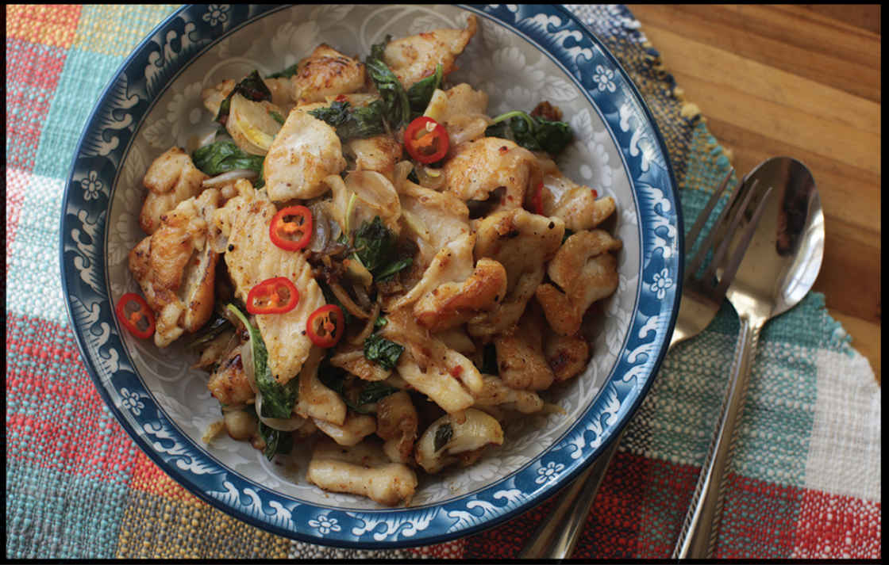

CHICKEN WITH BASIL, CHILES, AND FISH SAUCE
|
Yield Serves 4 Active Time 30 minutes Total Time 30 minutes |
Sliced pork loin or tenderloin can be used in place of the chicken. Thai or holy basil can be used in place of the sweet Italian. |
INGREDIENTS
For the Chicken:
1 pound (450 g) boneless, skinless chicken breasts, cut into ⅛-inch slices
½ teaspoon (1.5 g) kosher salt
1 teaspoon (5 ml) fish sauce
¼ teaspoon freshly ground white pepper
1 teaspoon (2 g) sugar
½ teaspoon (2 g) baking soda
½ teaspoon (1.5 g) cornstarch
For the Sauce:
1 tablespoon (15 ml) fish sauce, plus more to taste
1 tablespoon (12 g) sugar, plus more to taste
⅛ teaspoon freshly ground white pepper
Hot red pepper flakes or Thai chile flakes to taste, plus more to taste
For the Stir-Fry:
2 tablespoons (30 ml) peanut, rice bran, or other neutral oil
4 medium garlic cloves, 2 gently smashed, 2 minced (about 2 teaspoons/5 g minced)
1 teaspoon (4 g) minced fresh ginger
1 medium shallot, sliced (about 1½ ounces/45 g)
2 cups loosely packed fresh basil or Thai basil leaves (about 2 ounces/60 g)

This recipe combines a few classic Thai flavors (basil, chiles, and fish sauce) in a supersimple weeknight stir-fry that is not particularly authentic to any specific dish found in Thailand. This is the dish for the kind of weeknight where you don’t even want to bother mixing together a sauce. When I make dishes like this, I completely forgo the measuring spoons and scales. Eyeballing it and adjusting as you go is good enough.
DIRECTIONS
1For the Chicken: Place chicken in a medium bowl, cover with cold water, and vigorously agitate it. Drain through a fine-mesh strainer set in the sink and press on the chicken with your hands to remove excess water. Return the chicken to the bowl and add the fish sauce, white pepper, sugar, baking soda, and cornstarch. Stir vigorously with your fingertips or chopsticks for 30 seconds. Set aside while you prepare the remaining stir-fry ingredients (at least 15 minutes).
2For the Sauce: Combine the fish sauce, sugar, white pepper, and chile flakes.
3BEFORE YOU STIR-FRY, GET YOUR BOWLS READY:
4To Stir-Fry: Heat 1 tablespoon oil and the smashed garlic cloves in a wok over high heat until the garlic is sizzling and starts to brown. Add the chicken, spread it into a single layer, and cook without moving until lightly browned, about 1 minute. Continue cooking, tossing and stirring frequently, until the exterior is opaque, about 1 minute longer. Transfer to a bowl.
5Wipe out the wok, and the remaining tablespoon of oil, and heat over high heat until shimmering. Add the minced garlic, ginger, and shallots and stir-fry until fragrant, about 30 seconds.
6Return the chicken to the wok and stir-fry until the chicken is just cooked through and the shallots are softened, about 2 minutes longer.
7Add the sauce and toss to coat. Add the basil leaves and toss a couple times until they’re wilted. Taste and adjust seasoning with more fish sauce, sugar, and chiles as desired, then transfer to a plate and serve immediately with jasmine or other rice and sliced cucumbers, if desired.
Rotten Anchovies, or How I Learned to Stop Worrying and Love Umami Bombs
Barrels and barrels of months-old anchovies. That’s what I smelled that time I dropped an entire 750 ml bottle of fish sauce onto the hard tile floor of the kitchen at Clio, Ken Oringer’s former Boston restaurant where I had just started on the garde-manger station. To be honest, it wasn’t just me that smelled it. It was every cook, server, bartender, and guest in the restaurant. I watched as it dropped in slow motion, exploding like a grenade as the corner of the glass bottle hit the hard tile floor. The kitchen was immediately filled with a ripe stench that steadily wafted into the dining room over the course of the night. It took several days to dissipate completely.
While it’s true that in large quantities fish sauce smells terrible, when used properly, it adds an incomparable depth of flavor and a big serving of umami to boot. Fermented fish-based condiments are old. In both China and the Mediterranean, fermented condiments made from salting and fermenting fish, meat, and soybeans date back to the third or fourth century B.C. Fish-based condiments dwindled in China when soy sauce became the condiment of choice around the first century A.D., but fish sauce maintained its popularity throughout Southeast Asia, where it remains the primary seasoning ingredient throughout Vietnam, Thailand, Indonesia, Laos, Cambodia, Burma, and the Philippines. A form of Malaysian fish sauce called kecap (see here) is thought to be the precursor to modern ketchup.
In Ancient Greece and Rome, a form of fish sauce called garum was produced originally by salting and fermenting fish guts. Garum of different qualities could be produced from the same batch of fish: after placing the fermented fish in a woven basket, the liquamen that dripped through the basket would be reserved for the upper classes, while the allec that remained—the muddy bits of fermented fish guts—were sold cheaply as seasoning. Eventually, rather than a by-product of fish guts, garum was produced primarily through the fermentation of mackerel, anchovies, and other oily fish.
In modern times, the Neapolitan condiment colatura di alici is garum’s descendant, as is Worcestershire sauce, which gets some of its umami punch from fermented anchovies.
Modern Asian fish sauce is produced by cleaning and draining small fish and shellfish, drying it, salting it, packing it into large wooden containers, and keeping it submerged in brine while bacterial fermentation takes place over the course of nine months to a year. This process breaks down fish proteins into individual amino acids, as well as other organic compounds and minerals. It’s these amino acids that give fish sauce its flavor-enhancing qualities. During fermentation, the fish liquefies, ending up as a sludgy mixture that is then strained and aged in the sun for a period of two or more weeks. It is clarified once more, then bottled.
Perhaps more important than salt, though, is fish sauce’s concentration of amino acids. In a 2010 study in the Journal of Animal and Veterinary Advances, researchers found that while the concentration of most amino acids would diminish in anchovies fermented for two months, the levels of three specific ones—glutamic acid, aspartic acid, and histadine—would skyrocket. The first two, glutamic acid and aspartic acid, are known to trigger our sensation of umami when it binds to receptors on our tongues. Histadine, on the other hand, has a sweet flavor, and indeed, many fish sauces have a distinctly sweet, almost caramel-like flavor to them.
It’s these three flavors—salty, savory, and sweet—that give fish sauce its reputation as a potent flavor booster in all manner of dishes.
In my own tests I’ve found that the only time a milder, more expensive fish sauce really makes a difference is in dipping sauces like Vietnamese nước chấm or Thai nam pla prik, and even then, most folks will notice a difference only when tasted directly side by side. When used as a seasoning, even the most one-dimensional fish sauces (such as, say, the inexpensive Squid or Three Crabs brand sauces) will work just fine.
Bottom line: I keep a bottle of fancy-yet-widely-available Red Boat for dipping sauces (and appearances—god forbid my foodie friends see me cooking with Three Crabs!), and a bottle of whatever was available at the Asian supermarket or the international aisle of the Western supermarket for everything else.
In a bottle that is not perfectly sealed, water will also evaporate out of the fish sauce with time. Eventually this could lead to hypersalinity, which manifests as solid salt crystals that form on the bottom of the bottle or around the lid. Higher concentrations of protein can also lead to protein precipitation, which looks like cloudiness or crystals floating on the surface of the sauce. Neither the salt nor the protein crystals affect the palatability of fish sauce, and there’s no need to worry about it.